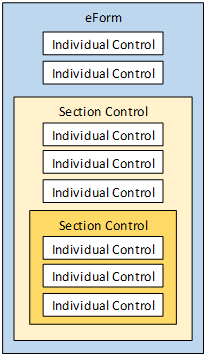

There are no hard and fast rules about where you should start when modeling a new process in Process Director. Most people find, however, that when faced with a blank slate and a complex process to implement, the Form is a good place to start. The Form collects the data that you will be using throughout your process, so the exercise of building the Form can be helpful in structuring the process in your mind, and determining where the Form data will be used in the process.
The first, and generally the most time consuming, step in designing a Form template consists of placing controls on the Form page. To make the design process as easy as possible, Process Director uses an Online Form Designer for this purpose.
One of the most important controls to use when designing forms is the Section control, which is a type of control that you'll use quite a bit to organize, show, or hide controls on a form. You can also nest sections, meaning that you can place a section inside of a section.
As a general practice, you should use the Section control regularly, as it provides several benefits. First, the Section control organizes your form into logical sections. Second, you can use the section to disable or hide portions of the Form so that users see only the portions of the Form that are relevant to their tasks. In the Sample project, for example, we will use sections to show or hide different portions of the Form, based on information entered by the user.

Figure 16: Nesting Section Controls
Another useful type of control is the Array. An Array is simply a repeating collection of grouped controls, organized in a row, or rows, of a table. For instance, in the Travel Expenses Request Form, there is a row of controls that enables you to enter daily travel, lodging and car rental expenses. A new row of expense amounts has to be entered for each day. An Array enables you to add these repeating rows for as many days as you need. Being able to create these collections of repeating controls is a frequent requirement for Form designers, so the Array's functionality is a very useful and commonly-used, Process Director feature.
The Array is similar to the Section in that there are separate Array Start and Array End controls, and all of the controls placed between the Array Start and Array End controls become part of the array. Arrays are always configured inside of tables, and the Array Start and Array End controls must be in the same table. The Array Start control must be in the first column of the table, while the Array End control must be in the last column. Unlike the Section, an Array cannot have a nested Array. An Array can also span more than one table row, so a single "row" of an Array can take up two or more table rows.
Figure 17: Array
At design time, you only have to build a single row for the array. When we are filling out the form at run time, you can add or delete rows as you desire. Process Director will automatically keep track of the rows in the array as you add or delete them.
When placed on a Form in design view, the Array controls will look like red, square brackets.

Figure 18: Array Controls